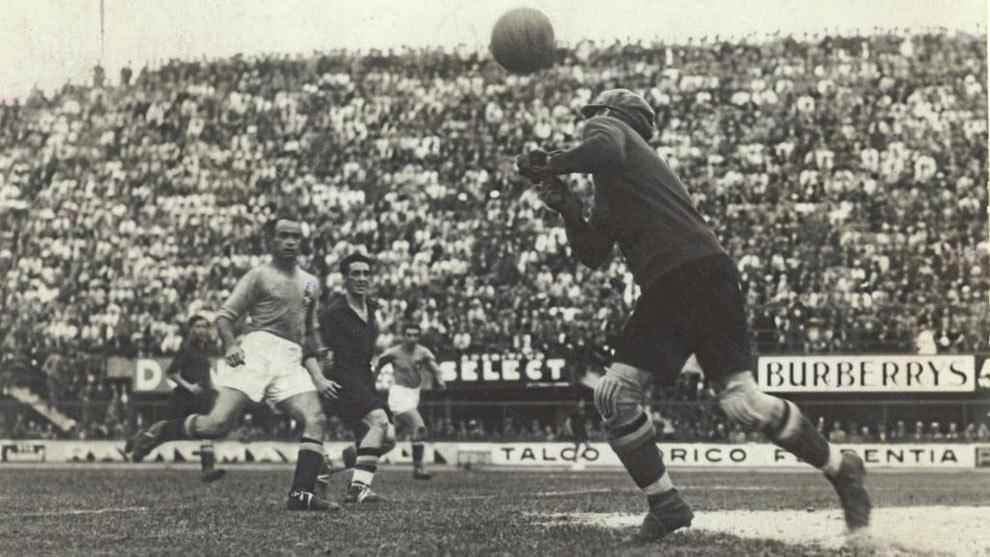

2.ª edición
Primer Mundial en Europa
Copa Mundial de la FIFA Italia 1934
27 de mayo – 10 de junio de 1934
País sede: Italia 🇮🇹
16 selecciones
17 partidos
Datos generales del torneo
- País sede: Italia 🇮🇹
- Ciudades sede: Roma, Turín, Florencia, Milán, Trieste, Bolonia, Nápoles, Génova
- Estadios: 8
- Selecciones participantes: 16
- Partidos jugados: 17
- Goles anotados: 70
- Campeón: Italia 🇮🇹
- Subcampeón: Checoslovaquia 🇨🇿
- Tercer lugar: Alemania 🇩🇪
- Cuarto lugar: Austria 🇦🇹
- Máximo goleador: Oldřich Nejedlý (Checoslovaquia, 5 goles)
Momentos destacados
Italia ganó su primer título mundial en un torneo marcado por la intensidad, el estilo defensivo europeo
y el fuerte ambiente político de la época.

Resumen del torneo
-
Italia organizó el primer Mundial disputado en Europa, un torneo que también fue aprovechado como plataforma
propagandística por el régimen de Benito Mussolini.
-
A diferencia de Uruguay 1930, donde los equipos fueron invitados, para 1934 se introdujeron por primera vez
eliminatorias clasificatorias, dejando fuera a selecciones fuertes como España y Holanda.
-
El torneo se jugó completamente en formato de eliminación directa, lo que generó partidos dramáticos,
incluyendo el Italia vs España que debió repetirse al día siguiente por empate y falta de luz.
-
En la final en Roma, Italia venció 2–1 a Checoslovaquia en tiempo extra con goles de Raimundo Orsi y Angelo Schiavio.
-
Con este campeonato, Italia se consolidó como una de las potencias futbolísticas emergentes de la década de 1930.
Fase final
Semifinales
- 🇮🇹 Italia 1–0 Austria 🇦🇹
- 🇨🇿 Checoslovaquia 3–1 Alemania 🇩🇪
Final
- 🇮🇹 Italia 2–1 Checoslovaquia 🇨🇿
Tiempo extra
Selecciones participantes
Participantes
- 🇮🇹 Italia
- 🇩🇪 Alemania
- 🇨🇿 Checoslovaquia
- 🇦🇹 Austria
- 🇪🇬 Egipto
- 🇪🇸 España
- 🇧🇪 Bélgica
- 🇳🇱 Países Bajos
- 🇬🇧 Inglaterra (no participó)
- 🇧🇷 Brasil
- 🇦🇷 Argentina (equipo alterno)
- 🇨🇭 Suiza
- 🇸🇪 Suecia
- 🇫🇷 Francia
- 🇭🇺 Hungría
- 🇷🇴 Rumania
Final: Italia vs Checoslovaquia
La final, disputada en Roma, fue un duelo de estilos entre la disciplina italiana y la técnica checoslovaca.
Italy remontó un 0–1 con un gol tardío de Orsi y luego un decisivo tanto de Schiavio en el tiempo extra.
Italia 🇮🇹 – Alineación
- DT: Vittorio Pozzo
- Gianpiero Combi (POR)
- Eraldo Monzeglio
- Luigi Allemandi
- Luigi Bertolini
- Attilio Ferraris
- Luigi Monti
- Enrique Guaita
- Giuseppe Meazza (C)
- Raimundo Orsi
- Angelo Schiavio
- Giovanni Ferrari
Checoslovaquia 🇨🇿 – Alineación
- DT: Karel Petrů
- František Plánička (POR, C)
- Jan Čtyřoký
- Josef Košťálek
- František Kloz
- Jaroslav Burgr
- Oldřich Nejedlý
- Václav Macek
- Josef Bican
- Antonín Puč
- Rudolf Krčil
Reseña general
La Copa Mundial de la FIFA Italia 1934 fue un torneo profundamente influido por el clima político europeo.
El régimen fascista italiano utilizó el evento como vitrina internacional, invirtiendo en estadios, logística
y una presentación impecable para mostrar una imagen poderosa del país.
En lo deportivo, Italia logró su primer título mundial bajo la dirección de Vittorio Pozzo,
uno de los entrenadores más exitosos de todos los tiempos. El torneo también destacó por la dureza de los partidos,
las tácticas defensivas típicas de la época y la aparición de grandes figuras como Giuseppe Meazza.
La revolución táctica europea comenzó a tomar forma en esta edición, marcando un cambio respecto
al juego sudamericano mostrado cuatro años antes. Italia 1934 se recuerda también por la participación
histórica de Egipto, la primera selección africana en disputar una Copa Mundial.